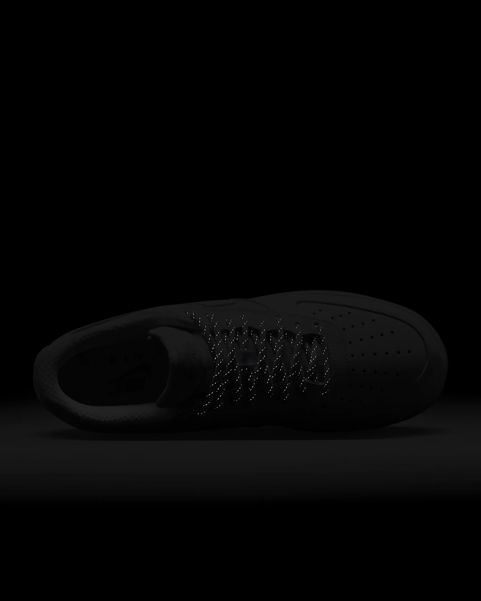

Los Mejores Deportes
Nike Air Force 1 '07
Cómodas, duraderas y atemporales: son las número 1 por una razón. La confección clásica de
los años 80 combina piel duradera y tejidos antidesgarro para una confección robusta.
La amortiguación Nike Air ofrece una comodidad duradera, y los detalles reflectantes y
una suela exterior azul esmerilado aportan un estilo llamativo que destaca tanto en la
cancha como en movimiento.
Ventajas
- Estilo duradero más liso incluso que el tablero de la canasta, con costuras resistentes
, materiales impecables y un diseño cupsole.
- La amortiguación Nike Air, diseñada originalmente para el baloncesto,
ofrece comodidad duradera.
- Zona del tobillo acolchada de perfil bajo para ofrecer un look elegante y cómodo.
- Suela exterior de goma con el tradicional punto de giro clásico del baloncesto
para ofrecer tracción y durabilidad.
Detalles del Producto
- Mediasuela de espuma
- Perforaciones en la puntera
- Detalles de diseño reflectante
- Este producto no está diseñado para su uso como equipo de protección individual (EPI)
Más Detalles

Nike Jordan 1
Tener unas zapatillas geniales cuenta como autocuidado. Además, con colores inspirados en los
pasillos de la tienda de cosméticos de tu barrio (además de una amortiguación Nike Air
increíble en la planta del pie), estas zapatillas Jordan de perfil medio te harán lucir
un look lleno de actitud. Adelante, ¡regálatelas!
Ventajas
- Revestimientos de charol en la puntera y revestimientos de tela para crear una
gran combinación.
- Unidad Nike Air-Sole en el talón para una amortiguación exclusiva.
- Suela exterior de goma para una mayor tracción en distintos tipos de superficie.
Más detalles
Nike Air Max 270
Las primeras Air Max para el día a día te ofrecen más estilo, comodidad y una gran actitud
en las Nike Air Max 270. El diseño se inspira en los iconos de Air Max para destacar la
innovación más importante de Nike con una amplia ventana y una gran variedad de colores
modernos.
Ventajas
- Unidad Max Air 270 para proporcionar una comodidad sin igual durante todo el día.
- Tejido Woven y sintético en la parte superior para ofrecer una mayor ligereza y ventilación.
- Mediasuela de espuma suave y cómoda.
- Funda interior elástica y confección de botín para crear un ajuste personalizable.
- Suela exterior de goma para una mayor tracción y durabilidad.
Detalles del Producto
- Detalles de malla para una mayor ventilación
- Material sintético y tela
- Presilla
Más detalles